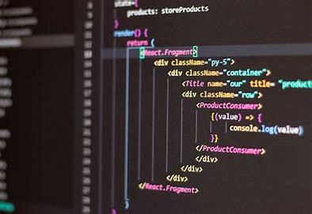

| II | OSA | PA | ECO | Tabela | BD1 | DD | FI | PW |
|---|

O algoritmo é uma sequência de passos utilizados para resolver um problema. O algoritmo pode ser aplicado em diversas situações, como um passo a passo de uma receita ou a ordem em que uma fórmula matemática deve ser resolvida. Na programação, o algoritmo é o conjunto de instruções e regras que um programa de computador possui para executar suas funções. O algoritmo é a base de todo estudo de programação